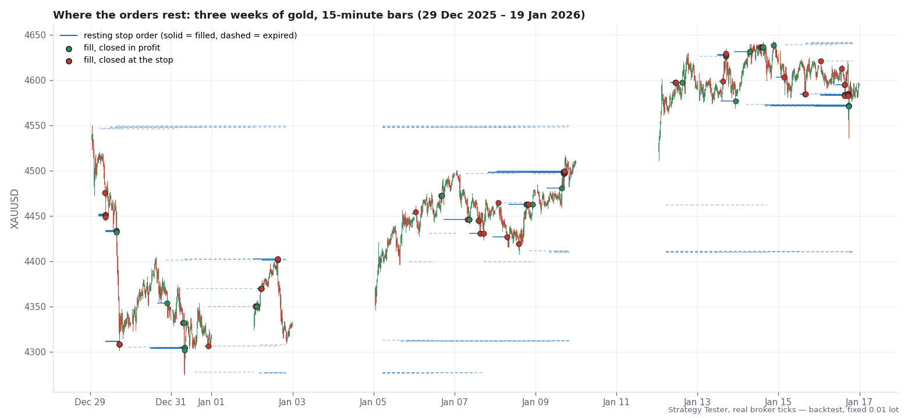
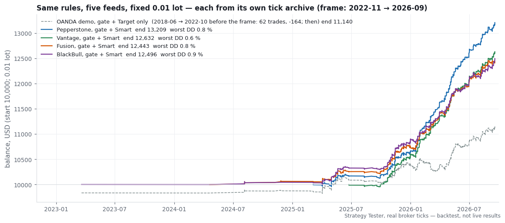
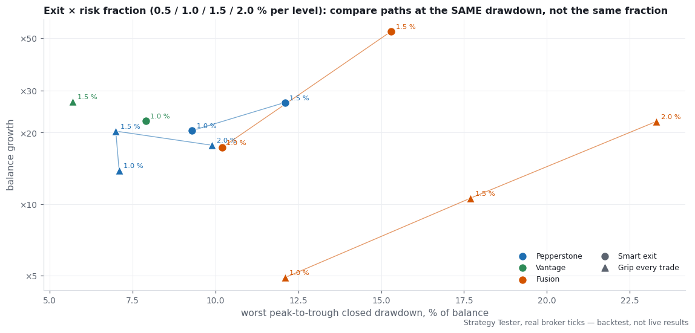
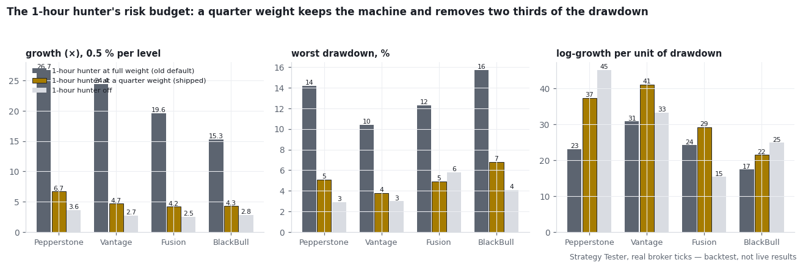

Kingfisher — Research Note
What the machine does, what was changed on the way to the shipped version, and what each change did — with the tests that decided it.
Versions 1.05 – 1.15 · September – October 2026
All figures in this note are Strategy Tester runs on real broker ticks at 100 % history quality. They are backtests, not a record of live trading. Every number names the build, the broker feed and the window it came from; a number that cannot be traced that way does not appear here.
0. The result in one table
Kingfisher runs out of the box on its Medium setting (1 % of balance per level). Version 1.15, three live broker feeds, 10,000 starting balance, compiled defaults:
Backtest, MetaTrader 5 Strategy Tester, real ticks, Kingfisher 1.15, BlackBull / Fusion / Vantage, windows shown per row.
| feed · window | growth | worst equity drawdown | profit factor |
|---|---|---|---|
| BlackBull · 2024-01 → 2026-09 | ×21.7 | 10.5 % | 2.38 |
| Fusion · 2024-01 → 2026-09 | ×19.4 | 10.6 % | 2.20 |
| Vantage · 2025-07 → 2026-09 | ×27.7 | 8.3 % | 3.01 |
The first trades fall in 2024-04: gold was too quiet before that. A fourth broker (Pepperstone) is left out until its 2026 tick history is complete again; earlier versions measured it alongside these three.
Backtest, MetaTrader 5 Strategy Tester, real ticks, BlackBull, 2022-11 → 2026-09, fixed 0.01 lot.
The same machine at a fixed 0.01 lot over four years on a fourth feed (BlackBull, 2022-11 → 2026-09): +25 %, worst drawdown 0.9 %, with two quiet years in which it placed 18 trades. That last row is the honest one: Kingfisher earned its result in one kind of market — gold moving in large daily bursts — and stands aside in the other kind rather than trading it.
How the machine got from a raw idea to that table is the rest of this note. Each section names a mechanism, shows the figure that decided it, and states what it did to losses and to profit. The exact geometry (distances, widths, thresholds) is deliberately not written out here; it is in the product's inputs.
1. How it was tested
Before the mechanisms, the rules the testing followed — because the numbers are only worth what the method is worth.
Backtest, MetaTrader 5 Strategy Tester, real ticks, Pepperstone / Vantage / Fusion / BlackBull, windows as in section 0 (2022-11 → 2026-09 through 2025-06 → 2026-09).
- Real ticks only. Every claim comes from a tester run on a broker's own tick archive at 100 % history quality. One-minute OHLC runs were used only to search, never to claim (a search on OHLC prefers a stop below the cost floor and doubles the profit factor; the same configuration on real ticks halves it back).
- Fixed lot first, sizing second. Every mechanism was first measured at a fixed 0.01 lot, where the trade count and the net are comparable to the cent. Sizing was added only after the fixed-lot behaviour was settled, and compared at matched drawdown rather than at matched risk fraction.
- Four feeds are one market. Pepperstone, Vantage, Fusion and BlackBull see the same gold market through four cost paths. Agreement across them shows that a mechanism survives the broker; it does not multiply the evidence by four.
- Predict, then run. Each experiment stated its expected numbers and its falsifier before the run. Where the falsifier fired, the entry says so and the idea was dropped or rebuilt; nothing was tuned after seeing the result.
- Controls. Random resting levels at the same cadence; shuffled outcomes; a fair-game calculation for the win rate; a matched-rate random skip for every filter; permutation tests for streaks; an untouched forward window for the parameter search.
- Look at it. No verdict was passed on a statistic alone. Every arm was read at three zooms — the whole curve, three weeks of bars with the orders drawn, and single fills at one-minute resolution.
- Parity to the cent. The product build reproduces the research build trade for trade (1,463 trades, net within two cents from tick-value rounding), and each shipped default reproduces the experiment that chose it to the cent before the manual quotes it.
2. The base mechanism: a resting order inside an unbroken level
Kingfisher is a level-break system. Before a burst, gold sits under a recent high or above a recent low that it has not managed to trade through, and a cluster of stop orders waits just beyond that level. Kingfisher rests its own stop order a hair inside the level, so it is already in the trade when the cluster goes off.

Three weeks of 15-minute bars with the EA's own resting orders drawn: solid segments filled, dashed ones expired unfilled. Levels persist for days; most orders never fill; the ones that do fill at the moment the level gives way.
Four hunters watch the four-hour level with slightly different distances and patience; a fifth watches the one-hour level. Every position carries a fixed stop loss and take profit in account currency per 0.01 lot from the second it opens, so the risk of a fill is known before it happens.
Backtest, MetaTrader 5 Strategy Tester, real ticks, Pepperstone, 2025-01 → 2026-09, fixed 0.01 lot, three random seeds against the level.
What the level is worth. The control that decides whether the level carries information is a random resting stop — the same offsets and the same exit, the level replaced by a random price around the real one's distance. It fills about twice as often, so the comparison is per trade. Three seeds, Pepperstone 2025-01 → 2026-09, fixed 0.01:
| arm | net per trade | profit factor | the flat year (2025) |
|---|---|---|---|
| Kingfisher level | $1.10 | 2.48 | +111 |
| random level, seed 7 / 11 / 23 | $0.54 / $0.55 / $0.54 | 1.65 / 1.69 / 1.66 | lost money, all three seeds |
A trending year pays any resting stop; the flat year separates the level from the drift. The level doubles the money per trade and flips the flat year's sign. That is the edge, and it is the only entry-side edge this note claims.
Backtest, MetaTrader 5 Strategy Tester, real ticks, Pepperstone / Vantage / Fusion / BlackBull, 2022-11 → 2026-09 (per-feed windows as in section 0).
The win rate is a geometry, not a skill. With a 2.00 stop and a 15.00 target the fair-game win rate under zero drift is 2/17, about 12 %. The bracket-only machine wins 22–26 % of its fills on four feeds. The excess over 12 % is the level; the rest is the target being 7.5 times the stop. Readers who expect a 60 % win rate from a breakout system are expecting the wrong geometry (section 4 shows where a 71 % win rate comes from, and what it costs).

3. Preventing losses: the quiet-market gate
The raw machine bleeds in quiet markets. A fixed-dollar stop is a fixed fraction of the hourly range only while the range is large; when gold's hourly range shrinks, the same 2.00 stop sits inside the noise and is taken by it. Over eight years on a demo feed (OANDA, 2018 → 2026) the raw machine loses money in every year but 2019 and 2026.
The fix is not a smaller stop and not a percentage stop — both were measured and both lose more (a stop scaled to price is 0.67 in 2018, and a 0.30 round-trip cost eats it). The fix is to refuse the trade when the stop is too large a share of the hourly range. Kingfisher calls this the quiet-market gate. It is self-calibrating — it compares the stop with the market's own current range, so it needs no calendar and no re-tuning.

With and without the gate on three feeds, bracket exit, fixed 0.01 lot.
Backtest, MetaTrader 5 Strategy Tester, real ticks, Pepperstone, 2025-01 → 2026-09, fixed 0.01 lot.
| Pepperstone 2025-01 → 2026-09, fixed 0.01 | trades | net | profit factor | equity drawdown |
|---|---|---|---|---|
| bracket only | 2,267 | 3,376 | 1.83 | 454 |
| with the quiet-market gate | 1,445 | 3,208 | 2.31 | 128 |
Minus five percent of the net for minus seventy-two percent of the drawdown, with 2026 untouched. On the eight-year demo feed the gated machine stayed positive where the raw bracket did not — and it did so by trading about one percent of the time before 2025.

Four years on BlackBull: 2023 and 2024 flat by refusal (1 and 17 trades), then the move.

The one failure the gate has, and its fix. In March 2020 the hourly range was inflated by a spread blow-out rather than by movement; the gate admitted 52 fills that lost 96 % of the time. High range from a wide spread is not a burst. A second admission, spread against the hour's range, closes that hole on the demo feed: the March-2020 dip shrinks to a fraction of its size, at the cost of a few trades. On the four live feeds it is noise of both signs around zero, so it ships as an input at zero — a documented defence for a broker whose spread blows out, not a default.
What did not help. A stricter "push" gate that refused fills whose approach had no momentum over-refused in the EA (an order cancelled on a quiet approach was not back in place when the push came) and was rebuilt into the exit instead (section 4). A minute-scale activity filter on the busy hunter looked like a clean +1–2 % offline and lost a fifth of the fills once the EA had to cancel and re-place orders to enforce it; it ships as an input at zero.
4. Improving profitability: the exit
Backtest, MetaTrader 5 Strategy Tester, real ticks, Pepperstone, 2025-01 → 2026-09, fixed 0.01 lot.
Same gated entries, three exits, Pepperstone 2025-01 → 2026-09, fixed 0.01 lot:
| exit | trades | win rate | net | profit factor | equity drawdown |
|---|---|---|---|---|---|
| bracket only (stop and target) | 1,445 | 26 % | 3,208 | 2.31 | 128 |
| Grip every trade (lock once ahead, close at half its best profit) | 1,476 | 71 % | 2,684 | 3.78 | 74 |
| Smart (fast fills ride to the target, slow fills are gripped) | 1,463 | 44 % | 3,209 | 2.68 | 98 |
Backtest, MetaTrader 5 Strategy Tester, real ticks, Pepperstone (table above), 2025-01 → 2026-09; Vantage, 2025-06 → 2026-09, fixed 0.01 lot.
This is where a 71 % win rate comes from: the Grip sells the right tail. It keeps 84 % of the net for 58 % of the drawdown at a fixed lot — and whether that is a good trade depends entirely on the broker's fills, which is section 6. Vantage replicates the ordering (bracket 2,775 at 111; Grip 1,839 at 45; Smart 2,632 at 90).
Smart reads the fill on its first tick: a fill that arrived on a push rides the bracket; a fill that drifted in is handed to the Grip. It keeps the bracket's entire net at 24 % less drawdown and beats the Grip by 20 % net at a fixed lot; it is the shipped default.
Why nothing cleverer is in the box. A hazard model over 42 features of the price path after the fill (out of sample, three feeds) ranked outcomes no better than the position's own current P&L already does — and holding on current P&L is what the bracket does for free. The exit line was closed on that result.
4.1 Exit and risk fraction, compared at the same drawdown
At a fixed lot the three exits are close. With sizing they are not, because compounding rewards the exit with the largest result per unit of drawdown, and that exit can then be run at a larger fraction.

Each point is one full run; the label is the risk fraction per level. Read horizontally: at a given worst drawdown, which exit has grown more?
Backtest, MetaTrader 5 Strategy Tester, real ticks, Vantage 2025-06 → 2026-09 and Pepperstone 2025-01 → 2026-09 (tight fills) vs Fusion 2024-01 → 2026-09 (wide fills).
Where the stop fills are tight (Vantage, Pepperstone in these tests) the Grip at the High level is the fastest and smoothest path — Vantage ×27 in 15 months at a 5.7 % worst drawdown. Where the fills are wide (Fusion) the Grip's small wins are eaten by the fill cost and Smart at High is the fast path (×53 at 15.3 %). Smoothness compounds only if the broker does not tax the small wins.
4.2 One exit per hunter (version 1.05)
Backtest, MetaTrader 5 Strategy Tester, real ticks, Pepperstone 2025-01 → 2026-09, Vantage 2025-06 → 2026-09, Fusion 2024-01 → 2026-09.
The one-hour hunter's fills arrive with less push than the four-hour fills and lose at the stop 57–66 % of the time under Smart. Putting only that hunter on the Grip, with the four-hour hunters left on Smart, was pre-registered and run on three feeds:
| Medium, one-hour hunter on the Grip | growth · worst drawdown | shipped default |
|---|---|---|
| Pepperstone | ×20.6 · 5.3 % | ×20.4 · 9.3 % |
| Vantage | ×15.8 · 5.9 % | ×22.4 · 7.9 % |
| Fusion | ×11.2 · 12.4 % | ×17.3 · 10.2 % |
Backtest, MetaTrader 5 Strategy Tester, real ticks, Pepperstone 2025-01 → 2026-09, Vantage 2025-06 → 2026-09.
Tight fills: the same growth at almost half the drawdown (Pepperstone), or a smoother path at less growth (Vantage; at the High level the same setting reaches ×49.8 at 8.6 %, between Smart-High's ×64.1 at 11.9 % and Grip-High's ×27.0 at 5.7 %). Wide fills: worse on both counts. The setting ships as a per-hunter input; the manual's four-week demo test tells you which broker you have.
Backtest, MetaTrader 5 Strategy Tester, real ticks, Pepperstone 2025-01 → 2026-09, Vantage 2025-06 → 2026-09, Fusion 2024-01 → 2026-09.
A second lever of the same family — how much push a fill must show to be allowed to ride — was tested the same way. Doubling the threshold raised growth per unit of drawdown by 30 % on both tight-fill brokers (Pepperstone ×18.7 at 6.9 %, Vantage ×20.3 at 5.9 %) and did nothing useful on the wide-fill one. Where the Grip arms made no difference anywhere, and loosening the quiet-market gate to buy more fills gave the same growth at 18–35 % drawdowns on all three brokers — the sharpest confirmation of section 3 under real sizing.
5. Sizing: one bet per level, and the busy hunter's budget
Per level, not per order. When the four four-hour hunters fill on the same break they are one bet, not four. Sizing each order at 2 % of balance — the obvious setting — makes that one bet an 8 % bet. Even 2 % per level carries a 40–44 % worst drawdown for its climb (Fusion 2024-01 → 2026-09: ×100 at 40 %; Vantage ×114 at 25 %), and per order is worse still; on a netting account the tester refused most of the placements on margin before the drawdown could even be measured. Kingfisher sizes the level: the fraction is shared by the hunters that rest on it, and a five-lot cap brakes the tail.

Version 1.15 at Medium (1 % per level) on three live feeds, log scale, with the drawdown track. The dashed line is the 20 % limit no run may cross.
Backtest, MetaTrader 5 Strategy Tester, real ticks, four live feeds (Pepperstone, Vantage, Fusion, BlackBull), Medium sizing (0.5 % per level), 2022-11 → 2026-09 (per-feed windows as in section 0).
The one-hour hunter's weight. Eighty percent of level events are the one-hour hunter alone, trading at a profit factor far below the four-hour events' (which win 39–47 % at profit factors of 2.3–5.0). Yet per-level sizing handed the one-hour hunter the full budget, because it is alone on its timeframe. Giving it a quarter of the budget was the single largest improvement in the programme:

Four feeds, 0.5 % per level. The quarter weight keeps the machine and removes two thirds of the drawdown; growth per unit of drawdown rises on every feed. Raising the fraction back to 1 % then buys the growth back at the same or lower drawdown — which is the shipped Medium.
Small accounts. At the minimum lot a 100-unit account is a 2 %-per-fill account whatever the risk level says. Replayed on four brokers it never stopped out at 1:200 or higher and reached 1,000 in 98–100 % of resampled histories, but it dipped to 57–92 first and in a fair-game year one history in three fell below 50. At 1:30 a 100-unit account cannot open one 0.01 lot. The manual carries these numbers verbatim.
6. Why results differ by broker
Same entries, same hit rate: the brokers differ in how far past the 2.00 stop they fill the losers, and in how much that costs the small wins.

Median and 90th-percentile distance from entry to the stop fill on the 2026 losers, four feeds. The widest feed earned about a quarter less per trade.

Execution delay 0 / 100 / 500 ms: server-side stops are indifferent; the Grip (a market close) loses a little at 500 ms.
The rule that follows: run four weeks on a demo account, read the median fill distance past the stop from the journal, and choose the exit accordingly (manual, chapters 4 and 7).
7. What was tested and rejected
So that the reader knows what is not in the box, and why:
Backtest, MetaTrader 5 Strategy Tester, real ticks, Pepperstone / Vantage / Fusion / BlackBull, windows as in section 0 (2022-11 → 2026-09 through 2025-06 → 2026-09).
- Losing streaks are chance. At the fill level the clustering is enormous (longest losing run 37 against a null of 22) — and it is entirely the burst structure: four hunters filling on one break. At the level of one bet, on four feeds, the longest run, the run count, the autocorrelation and the daily dispersion are all what a 21–24 % win rate on independent bets produces (p 0.31–0.92). Nothing in time predicts a losing streak.
- News hours, NFP, FOMC, CPI, holidays, year-end. None significant against a corrected bar over 110 bins; holidays directionally worse on 6 % of fills. No calendar filter is in the product.
- Order age. Old resting orders win more, not less. Patience is not a lever.
- A pre-break "setup quality" score (21 features of the bars before placement) restated the four-hour / one-hour split and added nothing beyond it.
- A per-fill machine-learning filter for the one-hour hunter and an imitation of a third-party model from our features: cross-feed nulls.
- A per-hunter, per-regime parameter search (three criteria, forward-mode optimiser, then every selected genome on real ticks on an untouched 2026-Q3 window): the shipped constants beat every genome on 7 of 8 hunter-by-regime rows and on all 8 on drawdown. The genomes that won their own window did so by sitting on a range boundary (a far target, a loose gate) and lost forward. No per-regime parameter set exists in the product because none survived.
Every forward-selected genome against the shipped defaults, one hunter at a time, real ticks, untouched holdout. Labels are the worst drawdown of each bar.
8. September 2026: the second research round
Backtest, MetaTrader 5 Strategy Tester, real ticks, BlackBull / Fusion / Pepperstone / IC Markets, 2025-04 → 2026-09; Dukascopy ticks 2013-05 → 2015-11 replayed at today's gold price level.
After 1.05 the machine went through a second, larger round of research. Its goal was not more profit. It was a steadier path: flat stretches instead of slow bleeds when gold is quiet, and no change to how Kingfisher trades an active market. The effort, in numbers that describe the work rather than the result:
- More than thirty separate studies and over 130 tested variants, each written down with its expected result and its pass bar before any number was read. With that many tries a few variants look good by chance, so a single good number never decides anything.
- Close to 5,000 trades replayed tick by tick on four brokers, from the fill to the exit, so that every alternative could be judged on exactly the same trades.
- Older markets replayed at today's price level. A fixed-dollar system behaves differently when gold is half its current price, so older years were replayed with every price scaled to today's level before any comparison.
- Controls on every question. Random timing, placebo levels at a similar distance, shuffled outcomes, and a matched random version of every filter. A rule that does no better than its random twin is not a rule.
- Two views of every result: a fixed lot per trade (so position size cannot flatter a variant) and the result per unit of risk.
What the round established:
The exit held its ground. Around sixty alternative ways to leave a trade were tested against the shipped exit: taking profit just short of the target, reacting to fading momentum, to older levels on the chart and to classic indicator signals and their rate of change, wider or trailing stops, break-even moves, a shared stop for stacked positions, and machine-learning confidence models. None beat the shipped exit at equal drawdown across brokers. Two candidates survived the offline stage and went to a full tester proof: one passed every check and is in the current version (next section); the other did not hold on every broker and stays out.
One system on every account. Since 1.13 the stops, targets and exit levels are the same distance in the gold price whatever currency the account is held in. An account in euros now trades exactly the system that was tested, proven trade for trade against a dollar account.
Restart-proof, and visible on the chart (1.14). A restart or a version update no longer changes how a running trade will exit: 480 simulated restarts in one test month produced exactly the same trades as an uninterrupted run. A panel on the chart shows why Kingfisher trades or waits, where each open trade's exit sits, and its closed result; the level behind every resting order and every exit are drawn on the chart. Pause, refresh, lock and close are sent by the EA itself and written to its log. 1.14 places exactly the same trades as 1.13; that was proven on the shipped file.
Market structure matters for the one-hour hunter. The largest finding of the round: the chart structure around a level changes how the one-hour hunter's breaks behave. In some structures they carry markedly further; in others they tend to fizzle. The follow-up (next section) settled it: the structure is real and measurable, but the market already prices it - rules built on it smoothed today's market and did not carry to older ones, so they stay out.
How a change gets in. A candidate must improve the current market in both of its halves, 2025 and 2026 separately, and must do no harm on older years replayed at today's price. What fails stays out, and this note will say so.
9. October 2026: version 1.15
Backtest, MetaTrader 5 Strategy Tester, real ticks, BlackBull / Fusion / Vantage / Pepperstone / IC Markets, 2025-04 → 2026-09; Dukascopy ticks 2013-05 → 2015-11 replayed at today's gold price level.
The third round asked one question from many sides: can the quiet stretches be made flatter, and can a winner be allowed to run further, without giving anything away in today's active market? The work behind the answer:
- Another fifteen studies in a few days, each again written down with its prediction and pass bar before any number was read, and each closed with a written verdict, including the ones that failed.
- A faster, unchanged engine. Kingfisher's own calculations were made about six times lighter; a test month that took over two minutes now takes about twenty seconds. The faster build was proven to place exactly the same trades, so every idea could be checked on every broker within hours instead of days.
- A fourth live broker feed and a data audit. A second Vantage account was added as a test feed. The audit also found a gap of several months in one broker's tick history; that broker now counts only on its complete months. A broker that suddenly looks better than the others is checked for gaps first.
- Every money decision read from the charts as well as the tables. For each candidate, the result is drawn day by day on every broker with the market's calm and busy periods marked, so a gain that comes from one lucky stretch is told apart from one that holds through every kind of market.
What changed in 1.15. The Grip, the exit that protects a winning trade, now never hands back more than a set share of the market's current 15-minute range. In a calm hour a large winner keeps more of its best profit; in a fast market the exit loosens by itself. On the deciding brokers it added a little to every 18-month result and kept the deepest dip the same or slightly smaller, in 2025 and in 2026 separately, and it did no harm on the older market replayed at today's price. It is on by default and can be switched off.
How it was proven. Switched off, 1.15 places exactly the same trades as 1.14. As shipped, it reproduces the research result trade for trade over 18 months on a live-broker feed (2,967 deals). With a simulated restart every hour, it trades exactly as without restarts. Visible on the panel and in the start-up line.
What was tested and kept out. Stricter quiet-market filters for the one-hour hunter, slower-confirmed levels, chart-pattern and channel-rhythm filters, starting the Grip earlier (down to the moment a trade opens), farther profit targets and targets at the next level, and a counter-trade confirmed by chart structure. Several made the 2025-26 stretch look smoother. Each either cost too much in today's active market, did not hold on every broker, or did harm on the older market - so none of them is in the box.
10. Limits
Backtest, MetaTrader 5 Strategy Tester, real ticks, Pepperstone / Vantage / Fusion / BlackBull, windows as in section 0.
- Kingfisher earned its result in a market of large daily gold bursts (2025-10 onward on every feed) and stands aside in quiet markets. A quiet year means few trades and little income. That is the design, and the four-year feed shows it.
- The figures are backtests on tick archives. Live spreads, slippage and a broker's stop fills differ from the archive's; the fill-cost section is the size of that difference on four feeds, not a guarantee of it.
- Growth figures at Medium include the compounding of a single 15–30-month window at 10,000 start. A different start date inside the same window moves them; the drawdown figures move less, which is why they lead every table.
- Past performance does not indicate future results. Test on a demo account with your broker before trading real funds.
Appendix — traceability
Backtest, MetaTrader 5 Strategy Tester, real ticks, Pepperstone, 2025-01 → 2026-09 (parity and version-history checks; other feeds cross-checked as noted in each proof).
| version | change | proof |
|---|---|---|
| 1.00 | product build from the research engine | trade-for-trade parity: 1,463 trades, net within two cents |
| 1.01 | per-hunter risk weight and per-hunter gate inputs | defaults unchanged, parity preserved |
| 1.02 | per-hunter activity gate input (ships at zero) | in-EA test lost a fifth of the fills; not a default |
| 1.03 | symbol-agnostic money-to-price conversion, session and order-limit checks | gold parity kept; validator reproduction clean |
| 1.04 | defaults: one-hour hunter at a quarter weight, Medium = 1 % per level | reproduces the choosing experiment to the cent on three feeds |
| 1.05 | one exit mode per hunter | pure four-hour events equal 1.04 to the cent; pure one-hour events under the Grip equal the research lock to the cent |
| 1.06 – 1.07 | research switches, off in the product | trade-for-trade identical to 1.05 |
| 1.08 | no order calls while the market is closed | identical trades, cleaner journal |
| 1.09 | prop-firm rules, all off by default | defaults unchanged |
| 1.10 | simpler input layout: account type, strategy settings, risk level first | defaults unchanged |
| 1.11 | on high-volatility days the one-hour hunter rides instead of locking | chosen on two feeds, validated on a third |
| 1.12 | optional counter-trade after a one-hour stop-out, off by default | switched off it equals 1.11 to the cent |
| 1.13 | the same stops, targets and exit levels on every account currency | euro deposit equals dollar deposit trade for trade |
| 1.14 | restart-proof exits, chart panel and drawings | same trades as 1.13 on the shipped file; 480 simulated restarts identical |
| 1.15 | the Grip hands back at most a set share of the 15-minute range; six times lighter engine | switched off equals 1.14 trade for trade; as shipped equals the research result over 18 months (2,967 deals); restarts every hour identical |
Every table in this note names its feed and window; the compiled binary that produced each row is recorded by its hash in the product manifest.